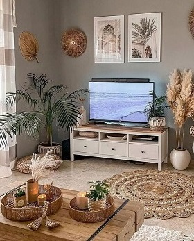
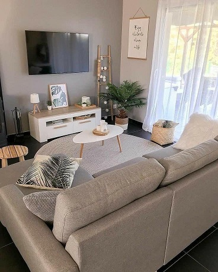
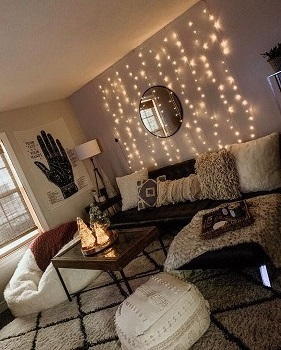

Como todos sabemos, el living/sala de estar - comedor es una habitación dedicada a recibir visitas, leer, ver la televisión o realizar otras actividades. Es uno de los lugares mas importantes de la casa, ya que es donde pasamos la mayor parte del dia y es por ello que debemos elegir una disposicion de los muebles que resulte comoda y espaciosa, armoniosa a la vista, facil de limpiar y acomodar, pero que no deje de ser estetica y bella. En este caso seleccione el estilo que más me gusta, el minimalista- nordico, caracterizado por utilizar sillones amplios, con apoya pies, alfombras de distintas texturas como peluche, yute, algodon entre otros, mesas ratoneras redondas, ovaladas, o rectangulares, racks para los Tv con cajones y/o canastos de mimbre, mesas y sillas nordicas blancas/negras combinadas con tonos madera y adornos como espejos redondos, plantas, cuadros, lucecitas, entre otros que le dan una terminación cálida y dulce.